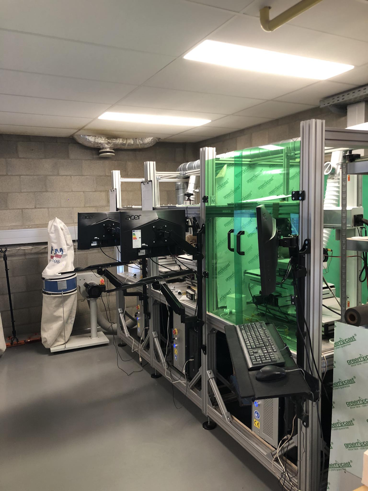
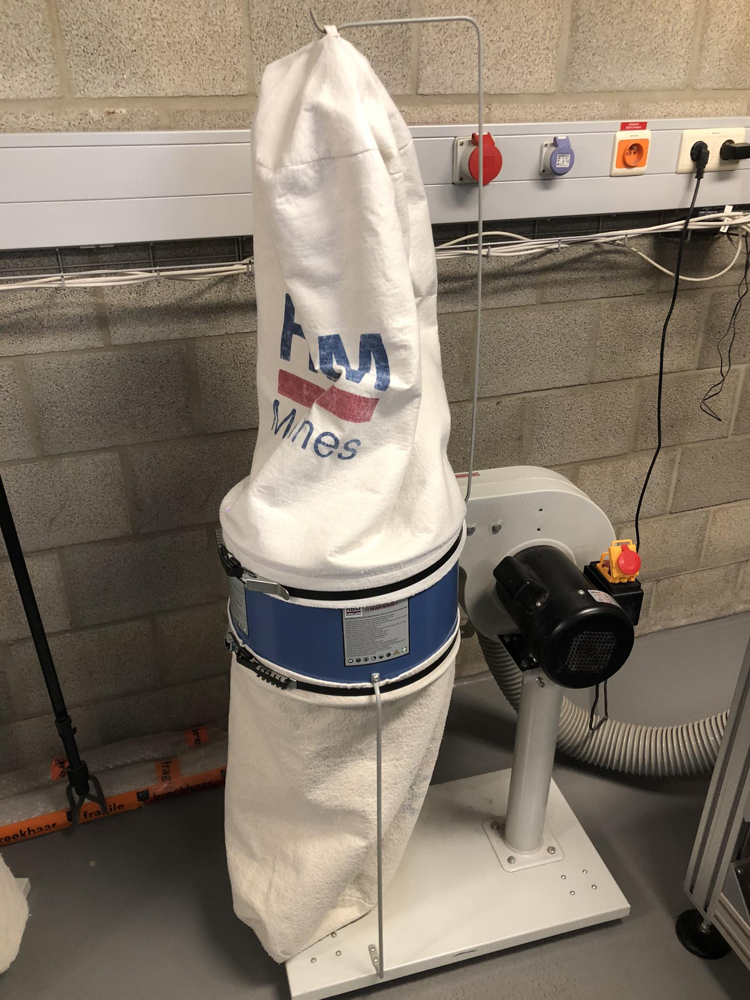

Context & Achtergrond
Mijn stage vond plaats bij CERcuits, een startup gelegen in de innovatiecampus te Geel, dat zich specialiseert in het maken van keramische PCB's.
PCB is de afkorting voor "Printed Circuit Board". Dit is meestal een relatief dun plaatje bestaand uit een isolerend materiaal zoals glasvezel of in dit geval een keramisch materiaal.
Op het oppervlak zie je meestal een laag koper in de vorm van lijntjes of "baantjes" die dienen om de erop gesoldeerde componenten met elkaar te verbinden.
Een PCB kan zeer eenvoudig zijn, bijvoorbeeld om een batterijpercentage te meten en weer te geven. Het kan ook een stuk complexer zijn en dienst doen als moederbord ter aansturing van een laptop. Een keramische PCB ziet er alsvolgt uit:
Ik kwam voor het eerst in contact met dit bedrijf tijdens één van onze lessen "Embedded Devices Essentials" in het tweede jaar van mijn bacheloropleiding.
Op dat moment waren we bezig met een project waarbij we een weerballon aan het ontwikkelen waren die ook nog eens dienst moest doen als noodnetwerk voor in rampgebieden.
Het idee was om een eigen PCB (printplaat) te ontwerpen die gegevens zou verzamelen over de omgeving alsook LORA (LOng RAnge) en Wifi aan boord zou hebben.
Aangezien de heren van CERcuits hier dag in dag uit mee bezig waren leek het onze prof dan ook interessant om eens mensen uit het vakgebied aan het woord te horen.
Die lezing was mij bijgebleven en dat is ook de reden waarom ik uiteindelijk op een dag in het tweede semester van mijn laatste jaar ben gaan aankloppen bij hen.
Ik werd onmiddelijk enthousiast onthaald door mijn stagementor, Ruben Mangelschots, legde uit hoe ik bij hen terechtkwam en kreeg meteen een rondleiding.
Niet veel later kreeg ik ook groen licht van het bedrijf dat ik bij hen aan de slag zou kunnen gaan. Mijn opdracht bestond eruit een systeem te ontwikkelen dat het stofafzuigsysteem dat reeds aanwezig was, te gaan monitoren en te automatiseren.

Bij het maken van PCB's worden lasers gebruikt om de gewenste vorm van de printplaat uit te snijden, boorgaten te voorzien of overtollig koper te verwijderen.
Bij dit proces komen heel wat kleine stofdeeltjes vrij, en om te vermijden dat deze overal in de lucht rondvliegen, alsook niet ophopen ergens in of op de laser, werd een stofafzuigsysteem geïnstalleerd.
Hiervoor werd een speciale afzuigkap gemaakt met behulp van een 3D-printer. De stofdeeltjes worden dus opgezogen aan de laserzijde en komen uiteindelijk in een filterzak terecht.

Op dit moment staan er in 1 ruimte 4 blowers van elk 600W die quasi permanent opstaan. De bestaande systemen werken al, maar kennen enkele nadelen:
- Deze blowers maken veel lawaai, waardoor langdurig werken in deze ruimte onaangenaam is voor de werknemers.
- Elk systeem produceert veel warmte, wat voor hoge temperaturen zorgt in de ruimte en dus ook niet echt gewenst is, zeker niet in de zomer.
- Het gezamenlijke energieverbruik en de daarbij horende kost zijn relatief hoog, doordat de blowers vaak dag en nacht aan staan.
Realisatie

Zoals bij de meeste projecten het geval is startte ik met heel wat onderzoek. Eerst en vooral ging ik samen met mijn stagementor kijken wat het beoogde systeem allemaal moest bevatten wat betreft functionaliteiten, bediening, componenten, ...
Na wat overleg werd het duidelijk wat de bedoeling was.
Het zogenaamde "Air Filtration Control System" moest, in grote lijnen:
- Detecteren wanneer een laser werd opgezet en met een bewerking bezig was.
- De blower die zorgde voor de afzuiging automatisch opzetten indien de laser actief was.
- De blower automatisch afzetten wanneer alle aangesloten lasers voor minstens 15 minuten inactief waren
- De status van de aan de blower gekoppelde filterzakken monitoren en aangeven wanneer deze volzat en dus vervangen moest worden.

Naast al deze zaken moest er ook de nodige signalisatie voorzien worden. Zo was het essentieel dat een 3-kleurige lamp met ingebouwde zoemer verschillende statussen aangaf. Wanneer de blower werd aangezet of agezet, begon een rode lamp te knipperen terwijl er een geluid werd afgespeeld om werknemers in de buurt te waarschuwen. Wanneer de filterzak vol was, begon er een gele lamp te pinken, en ga zo maar door.